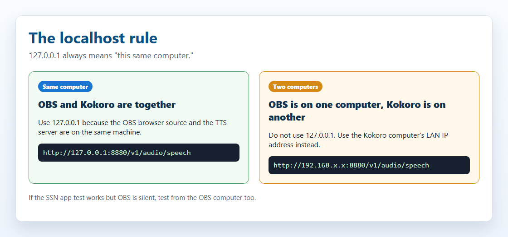

概要
Social Stream Ninjaは、ローカルAIのテキスト読み上げでチャットメッセージを声にできます。「ローカル」には、音声がブラウザー内で動く場合と、自分のコンピューターで小さなTTSサーバーを動かす場合の2つの意味があります。
2つの方法があります：
方法1 — 組み込みTTS 設定不要
いくつかの高品質なAI音声は、 Social Stream Ninjaに直接組み込まれています。WebAssemblyまたはONNXを使ってブラウザー内で動作し、サーバー、Docker、インストールは不要です。
- Kokoro 82M（最高品質）
- PiperニューラルTTS
- Kitten TTS
- eSpeak-NG
URLパラメーターを追加するだけで使えます。
方法2 — 自分でホストするサーバー Dockerが必要
自分のマシンでローカルTTSサーバーを実行し、Social Stream Ninjaを接続します。より多くの音声、音声クローン、サーバー側の制御が利用できます。
- Kokoro-FastAPI
- openedai-speech（Piper）
- kokoro-web
Social Stream組み込みの次を使用します： OpenAI互換エンドポイント に対応しています。
簡単な設定
ほとんどの配信者にとって、最も短い手順です：
&speech=en-US&ttsprovider=kokoro または &speech=en-US&ttsprovider=kitten の追加先： dock.html のURL。Testing local TTS。KokoroまたはPiperを使う場合は、初回のモデルダウンロードが完了するまで待ってください。localhost／127.0.0.1のルール
ローカルTTSで最もよくある間違いです。
localhost および 127.0.0.1 は、常に「この同じコンピューター」を意味します。 OBSとKokoroをそれぞれ別のコンピューターで動かしている場合、 127.0.0.1 がOBSのURLに含まれていると、Kokoroのコンピューターではなく、OBSのコンピューターを指します。

127.0.0.1 は、音声を再生するページとTTSサーバーが同じコンピューター上にある場合にのみ使用します。別のコンピューターにサーバーがある場合は、そのコンピューターのLAN IPアドレスを使用してください。| 自分の構成 | 使用するエンドポイント |
|---|---|
| OBSとKokoroが同じコンピューターで動く場合 | http://127.0.0.1:8880/v1/audio/speech |
| Kokoroが自宅ネットワーク内の別のコンピューターで動く場合 | http://192.168.x.x:8880/v1/audio/speechとし、Kokoroを実行するコンピューターのLAN IPを使います： |
| SSNデスクトップアプリのテストボタンは動くが、OBSは無音 | OBSには、OBS自身から利用できるエンドポイントが必要です。アプリでのテストだけでは、OBSからサーバーに接続できる証拠にはなりません。 |
Linux、macOS、Windowsでは、ファイアウォールでポートを許可し、Dockerが次でポートを公開していることも確認してください： -p 8880:8880.
SSNでクリックする場所
拡張機能のポップアップでTTSプロバイダーの選択欄を開き、次を選びます： カスタム／ローカルTTSエンドポイント（Custom / Local TTS Endpoint）。OpenAI互換のローカルエンドポイントの設定欄と、このガイドへのリンクが表示されます。

自分でホストする場合の流れ
SSNは、ローカル／自己ホストのTTSサーバーをOpenAI互換の音声エンドポイントとして扱います。基本的な流れ：
リクエストの形式
対象： ttsprovider=customtts, localtts、または openaiの場合、SSNは設定されたエンドポイントにJSONをPOSTします：
CORS、ホストされたページ、ブリッジ
CORSはブラウザーのアクセス許可の確認です。簡単に言うと、TTSサーバーがブラウザーに「このページから音声を要求してもよい」と伝える必要があります。その許可がないと、KokoroなどのTTSサーバーに届く前にリクエストがブロックされる場合があります。
- 次を読み込む場合：
dock.htmlをChromeやOBSで読み込む場合、CORSが関係することがあります。 - 次のようなホストされたページを読み込む場合：
https://beta.socialstream.ninja/dock.htmlの場合、ChromeがローカルまたはプライベートなHTTPアドレスへの呼び出しをブロックすることもあります。 - SSNアプリのテストボタンでは動くのに、OBSのブラウザーソースでは無音の場合、OBSを別途テストしてください。OBSは独自のブラウザーです。
サーバーがブラウザーからのリクエストを許可しない場合、次を実行します： SSNローカルTTSブリッジ とし、SSNの接続先を次に設定します： http://127.0.0.1:8124/v1/audio/speech。OBSでは、OBSと同じコンピューター上でブリッジを動かすのが最も簡単です。
対応する音声応答
| 応答 | SSNでの対応 | 補足 |
|---|---|---|
| バイナリ音声 | はい | 最適な方法です。返す形式： audio/mpeg, audio/wav, audio/ogg, audio/aac、またはブラウザーで再生できる他の音声形式。 |
| 音声URLを含むJSON | はい | SSNが確認する値： url, audio_url, output_url、入れ子になった data.url、および最初の data[] の項目。 |
| Base64音声を含むJSON | はい | SSNが確認する値： audio, audio_data, audioContent, b64_json、入れ子になった data フィールド、およびデータURL。 |
| 生のPCM | ラッパーを使用する場合のみ | PCMはWAVファイルまたはBase64のWAVとして返してください。ブラウザーのaudio要素では、生のPCMバイトを直接安定して再生できません。 |
mp3 はファイルが小さく、幅広いブラウザーに対応します。 wav をローカル音声クローンサーバーとブリッジのテストに使用し、 opus は、サーバーとブラウザーの両方が対応する場合にのみ使用します。
ストリーミング音声
SSNは現在、カスタム／ローカルTTSエンドポイントの逐次再生には対応していません。応答のBlobまたはJSON音声ペイロードを待ってから再生します。上流のサーバーの中にはストリーミングエンドポイントを提供するものもありますが、SSNの現在のOpenAI互換経路では、再生前にバッファーへ読み込みます。
実用上は、チャットTTSの文章を短くしてください。ストリーミング対応には、WAV／MP3チャンク、MediaSource、WebCodecs、サーバー側ミキサーなどを使った、別の再生経路が必要です。
方法1 — 組み込みTTS（設定不要）
これらのエンジンはSocial Stream Ninjaに同梱されており、インストールは不要です。WebAssembly（WASM）またはONNX Runtimeを使ってブラウザー内で動作します。
| プロバイダー | 品質 | CPU負荷 | GPU／WebGPU | URLパラメーター |
|---|---|---|---|---|
| Kokoro TTS | ⭐⭐⭐⭐⭐ 優秀 | 中 | GPUでより高速 | ?ttsprovider=kokoro |
| Piper TTS | ⭐⭐⭐⭐ とても良好 | 低 | CPUのみ | ?ttsprovider=piper |
| Kitten TTS | ⭐⭐⭐ 良好 | 非常に低い | CPUのみ | ?ttsprovider=kitten |
| eSpeak-NG | ⭐⭐ 機械的 | 最小 | CPUのみ | ?ttsprovider=espeak |
有効にする方法
追加する項目： &ttsprovider= および &speech= をSocial Streamの次に追加します： dock.html URL：
Kokoro TTSのオプション
SSNには現在、英語28種類、スペイン語3種類、ブラジルポルトガル語3種類のKokoro音声が用意されています。音声を指定するパラメーター： &voicekokoro=:
スペイン語の例：
ポルトガル語の例：
Piper TTSのオプション
音声モデルを指定するパラメーター： &pipervoice=:
ポルトガル語とスペイン語のPiper音声が利用できます：
Kitten TTSのオプション
eSpeak-NGのオプション
ブラウザーとデスクトップアプリの注意点
Chrome拡張機能、OBSのブラウザーソース、Social Stream Ninjaの単体デスクトップアプリは、すべて同じ次の設定を使用します： dock.html のTTS用URLパラメーターです。重要な違いは、どこで音が生成されるかです。
| 利用環境 | ローカルTTSの動作 | 音声の取得 |
|---|---|---|
| Chrome拡張機能／OBSブラウザーソース | SSNブリッジを使用しない場合、ブラウザーのfetchにはローカルサーバーのCORS設定が必要です。 | OBSのブラウザーソースで「OBSで音声を制御する」を使用します。 |
| 単体デスクトップアプリ | 同じプロバイダー設定を使用します。アプリのローカルファイルウィンドウはCORSの制約が少なめですが、ブラウザー形式のリクエストを拒否するサーバーには、ブリッジが最も確実な経路です。 | デスクトップ／アプリの音声を取得するか、アプリの出力を仮想オーディオケーブルに送ります。 |
| デスクトップアプリの組み込みKokoro | アプリはローカルの次を使用できます： ninjafy.tts 経路をKokoroに使用でき、ブラウザー内のモデル読み込みだけに依存しません。 |
音声はアプリから再生されるため、デスクトップ／アプリの音声キャプチャを使用します。 |
dock.html のURLをOBSに設定した場合、TTSサーバーへ接続して音声を再生するのはOBSです。
方法2 — 自分でホストするTTSサーバー
より多くの音声、音声クローン、複数のツールで再利用できる専用サーバーが必要なら、ローカルTTSサーバーを実行できます。Social Stream Ninjaは、組み込みの次の機能で接続します： OpenAI互換TTSエンドポイント 機能を使用します。ローカルサーバーではAPIキーは不要です。
おすすめの3つの選択肢：
| サーバー | モデル | GPU | ディスク | 既定のポート |
|---|---|---|---|---|
| Kokoro-FastAPI おすすめ | Kokoro 82M | 任意 | 約2GB | 8880 |
| openedai-speech （Piper） 軽量 | Piper TTS | CPUのみ | 1GB未満 | 8000 |
| kokoro-web | Kokoro 82M | 任意 | 約2GB | 3000 |
どのパッケージが適していますか？
| パッケージ | 主な利点 | 考慮する点 |
|---|---|---|
| 組み込みKokoro | 最初の選択肢におすすめ：サーバー不要、高品質、プライバシーを保ち、ブラウザーとデスクトップアプリで動作します。 | 音声クローンには対応しません。 |
| Kokoro-FastAPI | OpenAI互換サーバー。Dockerで簡単に設定でき、CPUとGPUに対応し、多数のKokoro音声を利用できます。 | 本格的な音声クローンには対応しません。音声のブレンドやカスタム音声機能は、サーバーのビルドによって異なります。 |
| openedai-speech | 軽量なOpenAI互換エンドポイント。PiperはCPU向けで、XTTSは約4GBのVRAMを目安にクローン機能を追加します。 | リポジトリでは大部分が古くなっているとされているため、役立つものではあっても、将来まで使い続けられると考えないでください。 |
| Chatterboxサーバー | 音声クローン、Web UIの選択肢、OpenAI互換API、長文処理ツール。 | 一部のビルドでは、CPUよりCUDA／GPUの方が安定して利用できます。設定はサーバーのフォークによって異なります。 |
| GPT-SoVITS | 短い参照音声と書き起こしに対応する、優れたクローン作成／制御。 | 既定ではOpenAI互換ではありません。SSNのブリッジモードを使用してください。 |
| F5-TTS | 参照WAVと書き起こしを使った、自然なゼロショット音声クローン。 | 公式プロジェクトは単純なOpenAIエンドポイントではありません。ラッパーまたはブリッジモードを使用してください。 |
| Qwen3-TTS | 小型の0.6B／1.7Bモデルも含む、新しいクローン作成と音声デザイン機能。 | 主な提供形態はライブラリ／デモで、SSNにはラッパーが必要です。 |
| MisoTTS | プロンプトに基づく高性能な音声生成。 | 6GBのVRAMでのローカル実行には向きません。必要に応じてリモート／独自ホスティングを使用してください。 |
音声クローンの仕組み
音声クローンは、SSNの独立したモードではありません。一部のローカルTTSサーバーにある機能です。SSNはチャットのテキストをローカルエンドポイントへ送り、サーバーが保存済みの参照音声ファイル、音声プロファイル、ブリッジ設定からクローン音声を選びます。
一般的な流れ
- 通常は1人の話者が話す3～30秒の参照音声を、背景雑音が少ない状態で録音します。
- エンジンによっては、その参照音声の正確な書き起こしも必要です。
- ローカルサーバーは、参照音声を話者のプロンプト、埋め込み表現、または音声プロファイルに変換します。
- SSNは次を使って、ライブチャットのテキストをエンドポイントへ送ります：
ttsprovider=customtts. - サーバーは通常WAVまたはMP3の再生可能な音声ファイルを返し、SSNがドック／ブラウザーソースで再生します。
VRAMが6GB以下の場合は、まず小型のゼロショット音声クローンモデルとOpenAI互換サーバーを検討してください。大きなモデルも、別の場所でホストすれば、同じSSNエンドポイント経由で利用できます。
| 選択肢 | 音声クローン | 6GBのVRAMに収まります | SSN用のAPIパス |
|---|---|---|---|
| Qwen3-TTS 0.6B Base | 3秒の参照音声 | 可能性が高い | OpenAI互換ラッパーを使用し、次に ttsprovider=customtts |
| XTTS-v2 / openedai-speech | 短いWAVの参照音声 | はい。openedai-speechによると約4GB | /v1/audio/speech |
| Chatterbox Turbo / Server | 参照音声によるクローン作成 | Turbo／小さなチャンクを使う場合は可能性が高い | OpenAI互換サーバーのビルド、またはブリッジの |
| GPT-SoVITS | ゼロショットは5秒、少数例での学習は1分 | fp16／軽量構成なら可能性が高い | 使う項目： scripts/local-tts-bridge.cjs --mode gptsovits |
| F5-TTS | 参照WAV + 書き起こし | ビルドとボコーダーによります | OpenAI互換ラッパー、または次を使用します： --mode f5 をF5-TTSサーバーラッパーに使用します |
| MisoTTS 8B | プロンプトの音声コンテキスト | 不可。プロジェクトは24GBのVRAMを推奨 | リモート／カスタムエンドポイントのみ |
POST /v1/audio/speech 付随する値： { model, input, voice, response_format, speed } を受け付け、再生可能な音声ファイルを返します。OpenAI、Coqui／XTTS、Kokoroラッパー、Qwenラッパー、および多くのプロキシサービスがこの形式に対応します。
コンピューターの要件
これらは実用的な目安であり、確実な保証ではありません。モデルのバージョン、量子化、テキストの長さ、Dockerイメージ、バックグラウンドのアプリによって、メモリ使用量は変わります。
| 選択肢 | 実用的な最小構成 | 推奨構成 | 補足 |
|---|---|---|---|
| システムTTS／eSpeak | 現代的なPCであれば利用可能 | 任意のPC | 高速ですが品質は低めで、クローン作成には対応しません。 |
| 組み込みKitten | 低性能のCPU、4GBのRAM | 現代的なノートPCのCPU、8GBのRAM | 小型のONNXモデルで、起動が速いです。 |
| 組み込みPiper | 現代的なCPU、4～8GBのRAM | 現代的なCPU、8GBのRAM | 少ないリソースで使えるニューラル音声の選択肢。 |
| 組み込みKokoro | 現代的なCPU、8GBのRAM | WebGPU対応GPUまたは高速CPU、8～16GBのRAM | 設定不要で高品質です。初回読み込み時にモデルのデータをダウンロードします。 |
| Kokoro-FastAPI | CPUのDockerホスト、8GBのRAM | NVIDIA GPUは任意、8～16GBのRAM | ブラウザーでのモデル読み込みが適さない場合に便利なローカルサーバー。 |
| openedai-speech Piper | CPU、4～8GBのRAM | CPU、8GBのRAM | 軽量なOpenAI互換サーバー。 |
| openedai-speech XTTS | 約4GBのVRAMを備えたNVIDIA GPU、8～16GBのRAM | 6GB以上のNVIDIA GPU、16GBのRAM | 音声クローンの経路。CPUでも可能ですが低速です。 |
| Chatterboxサーバー | 一部のビルドではCPUでも動作しますが、低速です | 6GB以上のNVIDIA GPU、16GBのRAM | クローン作成や長文の処理ではGPUを使用してください。 |
| GPT-SoVITS / F5-TTS / Qwen3-TTS | CPUはテスト用のみで、低速です | 小型／最適化モデルでは6GB以上のNVIDIA GPU、16GBのRAM | ラッパーの選択とモデルの大きさが重要です。設定の手間が増えることを想定してください。 |
| MisoTTS 8B | 6GBのVRAMでのローカル実行は非推奨 | 24GBのVRAMまたはリモートホスト | リポジトリでは、対話的な用途にVRAMの多いGPUを推奨しています。 |
テストしたサーバーについて
SSNとの互換性を確認した、自己ホストの音声クローン用接続先です。ローカルエンドポイントの経路は、次の両方に対してテスト済みです： dock.html および featured.html.
SSNは、バイナリ音声の直接応答、Base64音声を含むJSON、音声URLを含むJSONを受け付けます。現在のカスタム／ローカル再生では、返された音声をバッファーに読み込んでから再生します。逐次的なストリーミング再生にはまだ対応していません。
| サーバー | SSNの経路 | 補足 |
|---|---|---|
| openedai-speech | 直接接続またはブリッジ | OpenAI互換 /v1/audio/speech。Piperモードは、次からの実際のCPU音声合成でテスト済みです： dock.html および featured.htmlを、直接接続とブリッジ経由の両方で確認しています。Windowsでソースから実行する場合は、venvの次の設定を確認してください： Scripts フォルダーが次に含まれることを確認してください： PATH これにより、 piper.exe および ffmpeg.exe が見つかることを確認してください。 |
| chatterbox-tts-api | 直接接続またはブリッジ | OpenAI互換 /v1/audio/speech。クローン作成には、設定した参照音声を使用します。API形式は、直接接続とブリッジ経由でテスト済みです。 |
| Chatterbox-TTS-Server | 直接接続またはブリッジ | OpenAI互換エンドポイントとWeb UI。次を使用した実際のCPU音声合成でテスト済みです： Emily.wav 取得元： dock.html および featured.htmlを、直接接続とブリッジ経由の両方で確認しています。 |
| GPT-SoVITS | ブリッジモード | SSNブリッジを次で実行します： --mode gptsovits。接続先サーバー： /ttsであり、OpenAI互換ではありません。 |
| F5-TTS_server | ブリッジモード | SSNブリッジを次で実行します： --mode f5。接続先サーバーが使用する形式： GET /synthesize_speech/. |
| F5-TTS公式 | ラッパーが必要 | 主な提供形態はCLI、Gradio、ソケットサーバーです。OpenAI互換ラッパー、またはラッパーに接続するF5ブリッジモードを使用してください。 |
| Qwen3-TTS | ラッパーが必要 | 主な提供形態はライブラリとGradioデモです。次を包む小さなOpenAI互換ラッパーの候補に適しています： generate_voice_clone. |
| MisoTTS | リモート／カスタムのみ | 音声クローンには対応していますが、8Bモデルは6GBのVRAMでの実行には向かず、リポジトリにはローカルRESTエンドポイントもありません。 |
Kokoro-FastAPIの設定
Kokoro-FastAPI は、Kokoro 82MモデルをOpenAI互換API付きのローカルサーバーとして実行します。CPUで動作し、GPUは不要で、音声の品質も優れています。
Dockerでインストール
ターミナル（コマンドプロンプト、PowerShell、Terminal）を開き、次のいずれかを実行します：
CPU（どのコンピューターでも動作）：
GPU（NVIDIAのみ — 音声合成が高速）：
動作を確認する
ブラウザーで次を開きます： http://localhost:8880/web/— 音声を試せるWeb UIが表示されます。
利用可能な音声
67種類以上の音声が利用できます。代表例：
すべての音声を確認して試せる場所： http://localhost:8880/web/ （サーバーの起動後）。
SSNのURL
Kokoro-FastAPIがOBSと同じコンピューターにある場合：
Kokoro-FastAPIが別のコンピューターにある場合、次を置き換えます： 192.168.x.x を、そのコンピューターのLAN IPアドレスに置き換えます：
af_bella, af_sarah, am_adam、または bf_emma。次のような名前： echo, nova、および alloy はOpenAI／openedai-speech形式の名前で、Kokoroでは動かない場合があります。
サーバーを動作させたままにする
Kokoro-FastAPIをバックグラウンドで自動実行し続けるには、Dockerの再起動フラグを使用します：
以後は再起動のたびに、Docker Desktopと一緒に自動起動します。
openedai-speechの設定（PiperとXTTS-v2）
openedai-speech OpenAI互換の次のエンドポイントを公開します： /v1/audio/speech エンドポイントを公開します。小型イメージではCPUでPiperを実行し、完全版イメージでは対応GPUでXTTS-v2の音声クローンを実行できます。
選択肢A：軽量なPiper
1GB未満のCPU専用TTSサーバーには、この方法を使用してください。XTTS-v2や音声クローンは含まれません。
Docker Composeでインストール
docker-compose.min.ymlを使用します。または、以下のコマンドを直接実行してください。
Windowsでのソースからのインストールについて
openedai-speechをDockerではなくローカルのチェックアウトから実行する場合、その仮想環境のscriptsフォルダーを次に追加します： PATH に追加してからサーバーを起動してください。これがないと、サーバーが次を見つけられず、HTTP 500を返す場合があります： piper.exe または ffmpeg.exe.
利用可能な音声
openedai-speechでは、OpenAI形式の音声名をPiperの音声に対応させています：
SSNのURL
選択肢B：XTTS-v2の音声クローン
XTTS-v2自体はモデルであり、Web APIではありません。完全版のopenedai-speechサーバーを使い、モデルの読み込み、保存した参照音声の選択、SSNからのチャットテキストの受信、再生可能な音声の返却を行ってください。サーバーによると、実用的なGPU VRAMの目安は約4GBです。CPU推論も可能ですが低速です。
openedai-speech-min をXTTS-v2に使用しないでください。 最小イメージはPiper専用です。XTTS-v2には完全版のインストールと次が必要です： model=tts-1-hd を各読み上げリクエストに含めます。
macOSまたはLinuxでは、次を使用します： cp sample.env speech.env を使用し、次の値は使いません： Copy-Item。Dockerが対応GPUにアクセスできる必要があります。モデルは初回使用時にダウンロードされます。
tts-1-hd セクション。格納先： config/voice_to_speaker.yaml:次の下にすでに登録されている音声は残してください： tts-1-hd。変更する値： me をSSNから送信したい音声名に変更し、必要に応じて正しいXTTS言語コードを使用してください。
openaimodel=tts-1-hd がXTTS-v2には必要です。 省略した場合、Social Streamは既定の次の値を送信します： tts-1とすると、openedai-speechは代わりにPiperを選択します。 voiceopenai の値は、次にあるクローン音声名と一致させる必要があります： voice_to_speaker.yaml.
ブラウザーまたはOBSが直接のリクエストをブロックする場合、次を実行します： ローカルTTSブリッジ をOBSのコンピューター上で実行し、モデルと音声のパラメーターはそのままで、次を変更します： openaiendpoint → http://127.0.0.1:8124/v1/audio/speech.
ローカルTTSブリッジ
ブリッジは小さなローカルの補助プログラムです。SSNからのブラウザーリクエストを受け付け、TTSサーバーと通信し、ブラウザー向けのヘッダーを付けて音声をSSNへ返します。
http://127.0.0.1:8124/v1/audio/speechとします。実際のTTSサーバーが別のコンピューター上にある場合も同様です。

単体のスターターフォルダー： local-tts-bridge/。参照： ブリッジのREADME ですべての起動オプションを確認できます。
OpenAI互換プロキシ
TTSサーバーが同じコンピューターにある場合のWindows PowerShell：
TTSサーバーが別のコンピューターにある場合のWindows PowerShell：
macOS／Linuxのターミナル：
次に、OBSの次のURLを設定します： dock.html URLをブリッジに向けます：
GPT-SoVITSプロキシモード
GPT-SoVITSは独自の次の形式を使用します： /tts というJSON形式を使うため、ブリッジがSSNのOpenAI互換リクエストをGPT-SoVITSのリクエスト本文に変換します。
F5-TTSサーバープロキシモード
一部のF5-TTSサーバーラッパーは、次を公開します： /synthesize_speech/?text=...&voice=... を使用し、OpenAI互換エンドポイントではありません。ブリッジがSSNのリクエストをそのクエリー形式に変換できます。
http://127.0.0.1:8124/v1/audio/speech。ポートを変更するには、次を使用します： SSN_TTS_BRIDGE_PORT=8125 （必要な場合）。
Social Stream Ninjaへの接続
上記の自分でホストするサーバーはすべて、同じ接続方法、つまりSocial Stream組み込みの次の機能を使用します： OpenAI TTSエンドポイント 機能を、カスタムのローカルURLで使用します。
URLパラメーター
| パラメーター | 値 | 説明 |
|---|---|---|
ttsprovider |
customtts または openai |
OpenAI互換のTTS経路を使用します。使う設定： customtts をローカル／自己ホストのエンドポイントに使用します。 |
openaiendpoint |
http://localhost:8880/v1/audio/speech |
ローカルサーバーのURL（必要に応じてポートを変更） |
speech |
en-US |
英語のTTSを有効にします |
voiceopenai |
af_bella |
音声名（サーバーによって異なります） |
openaiformat |
mp3 |
音声形式：mp3、wav、opus、flac |
openaispeed |
1.0 |
読み上げ速度（0.5～2.0） |
customttsendpoint および localttsendpoint も使用できます。 customttsvoice, localttsvoice, customttsmodel, localttsmodel, customttsformat、および localttsformat は、OpenAI形式のフィールドの別名として受け付けられます。
openaiendpoint には、TTSを再生するページから接続できる必要があります。また、 voiceopenai には、サーバーが対応する音声を指定する必要があります。Kokoro-FastAPIでは、次のような名前を使用します： af_bella。openedai-speechでは、次のような名前がよく使われます： nova または echo.
URLの完全な使用例
Kokoro-FastAPI：
openedai-speech：
kokoro-web：
その他のTTSオプション
これらは、ローカルサーバーを含むすべてのTTSプロバイダーで使えます：
| パラメーター | 例 | 説明 |
|---|---|---|
simpletts |
&simpletts |
「says」を省略し、メッセージだけを読む |
simpletts2 |
&simpletts2 |
ユーザー名を完全に省略 |
volume |
&volume=0.8 |
音量（0.0～1.0） |
skipmessages |
&skipmessages=3 |
3件に1件だけ読み上げる |
ttscommand |
&ttscommand=!say |
!sayで始まるメッセージだけを読み上げる |
readevents |
&readevents |
サブスク、寄付なども読み上げる |
ttsquick |
&ttsquick=100 |
この文字数で意図的に読み上げを打ち切ります。メッセージが途中で切れる場合は削除してください。 |
対応する価値のあるブラウザー組み込みの選択肢
SSNはすでにOS／ブラウザーの次の機能に対応しています： speechSynthesis、組み込みのKokoro、Piper、Kitten、eSpeak。今後ブラウザー側に追加すると特に役立つ機能は、次に対応する環境での音声出力デバイス選択です： setSinkId が利用できる場合の音声出力デバイス選択、Piper音声の追加、音声チャンクをストリーミングできるサーバー用の専用の逐次再生経路です。
音声をOBSに取り込む
OBSでTTSの音声を取得する方法は、Social Stream Ninjaをどのように動かしているかによって異なります。
方法1 — OBSブラウザーソース おすすめ
これが最も簡単な方法で、次で動作します： すべてのTTSプロバイダー （組み込みと、自分でホストするサーバー）。
dock.html TTSパラメーター付きURL方法2 — SSNデスクトップアプリ + デスクトップ音声
Social Stream Ninjaの単体デスクトップアプリを使用する場合（OBSのブラウザーソースではない場合）：
- Windows： VB-Audio Virtual Cable （無料）
- 設定する項目： CABLE Input をWindowsのサウンド設定でSSNアプリの出力先にします
- 取り込み CABLE Output をOBSの音声入力キャプチャで取得します
Windowsの音声ルーティングのリンク
Windows 10のアプリ別ルーティング
Windows 11のアプリ別ルーティング
音声ルーティングソフトウェア
Audio Router は1つのアプリを仮想ケーブルに送れますが、古いソフトウェアです。Windowsのアプリ別ルーティングが使える場合は、そちらを優先してください。
Voicemeeterによる高度なルーティング
Voicemeeter は、TTSを手元で聞きながらOBSへ送り、音楽やゲーム音声と分離したい場合に適しています。
?speech=en-US でプロバイダーを指定しない場合）は、ブラウザーが提供する音声に依存します。 OBSに音声が表示されなかったり、音声が一覧にあっても取得可能な音を出せなかったりする場合があります。読み上げとOBSの録画を別々にテストしてください。上記のプロバイダーのいずれかを使用します（kokoro, piperなど）を代わりに使用します。
比較表
| 選択肢 | 設定 | 品質 | 非公開 | OBS（ブラウザーソース） | GPUの必要性 | 費用 |
|---|---|---|---|---|---|---|
| 組み込みKokoro | なし | ⭐⭐⭐⭐⭐ | はい | はい | 不要（あると高速） | 無料 |
| 組み込みPiper | なし | ⭐⭐⭐⭐ | はい | はい | 不要 | 無料 |
| 組み込みKitten | なし | ⭐⭐⭐ | はい | はい | 不要 | 無料 |
| 組み込みeSpeak | なし | ⭐⭐ | はい | はい | 不要 | 無料 |
| Kokoro-FastAPI | Docker | ⭐⭐⭐⭐⭐ | はい | はい | 不要（任意） | 無料 |
| openedai-speech | Docker | ⭐⭐⭐⭐ | はい | はい | 不要 | 無料 |
| ElevenLabs | APIキー | ⭐⭐⭐⭐⭐ | 不要 | はい | 不要 | 有料プラン |
| システム読み上げ（System TTS） | なし | ⭐⭐ | はい | 不要* | 不要 | 無料 |
* システムTTSをOBSで取得するには、仮想オーディオケーブルでのルーティングが必要です。
トラブル対処

SSNアプリのテストは動くが、OBSで音が出ない
アプリのテストで確認できるのは、アプリからサーバーに接続できることだけです。OBSのブラウザーソースからもエンドポイントに接続し、音声を再生する必要があります。
- OBSとTTSサーバーが別のコンピューターにある場合、次を置き換えます：
127.0.0.1を、TTSサーバーのコンピューターのLAN IPに置き換えます。 - OBSのブラウザーソースで、次を確認してください： OBSで音声を制御する（Control audio via OBS） が有効になっていることを確認してください。
- ブラウザーがリクエストをブロックする場合、OBSのコンピューターでSSNローカルTTSブリッジを試してください。
最初の1文字、または数語しか読み上げられない
- 実際のOBSのURLで次を確認してください：
ttsquick。そのオプションは、意図的に読み上げるテキストを短くします。 - 次が表示される場合：
&ttsquick=14などの小さな数値がある場合は、削除してOBSのブラウザーソースを再読み込みしてください。 - 次を使用する場合：
typewriter=がある場合、テスト中は一時的に削除してください。TTSは通常、元のメッセージを使用しますが、視覚効果を外すと、タイミングの問題をすぐに切り分けられます。
ローカルサーバーが応答しない
- Dockerが動作し、コンテナーが起動したままであることを確認してください。
- TTSサーバーのコンピューターで、次を開きます：
http://127.0.0.1:8880/web/をKokoro-FastAPIに使用します。他のサーバーでは対応するポートを使用してください。 - OBSのコンピューターから、次を開きます：
http://SERVER_LAN_IP:8880/web/。これが読み込めない場合、OBSからもそのサーバーは利用できません。 - LAN IPで読み込めない場合、サーバー側コンピューターのファイアウォールを確認してください。
CORSまたはローカルネットワークがブロックされる
ブラウザーがCORS、ローカルネットワークアクセス、プライベートネットワークアクセス、failed fetchによるブロックを表示した場合、TTSサーバーにはリクエストが届いていない可能性があります。
- 実行するコマンド：
npm run local-tts-bridgeをOBSのコンピューター上で実行し、SSNの接続先を次にします：http://127.0.0.1:8124/v1/audio/speech. - ホストされているbetaのドックページを使う場合、ローカルHTTPエンドポイントはブラウザーにブロックされやすくなります。通常は、ブリッジまたはローカルのアプリウィンドウを使う方が簡単です。
音声が違う、または音声が見つからない
- Kokoro-FastAPIで試す音声：
af_bella,af_sarah,am_adam、またはKokoroのWeb UIにある別の音声。 - openedai-speechでの音声例：
nova,echo、およびalloyが有効な場合があります。 - 一部のサーバーでは、音声名の大文字と小文字を区別します。
音声は再生されるがOBSで取得できない
- 確認する項目： OBSで音声を制御する（Control audio via OBS） がブラウザーソースのプロパティで有効になっていることを確認します。
- テストメッセージの再生中に、OBSの音声ミキサーを確認します。ブラウザーソースのメーターが動くことを確認してください。
- システムTTSだけを使用していないことを確認してください（
?speech=en-US次を付けずに：&ttsprovider=）。システムTTSでは、デスクトップ音声や仮想オーディオケーブルによる取得が必要な場合があります。
Dockerイメージが見つからない
Dockerイメージのタグは変わる場合があります。このガイドのコマンドが動かなくなったら、プロジェクトのページで現在のタグを確認してください：
- Kokoro-FastAPI： github.com/remsky/Kokoro-FastAPI
- openedai-speech： github.com/matatonic/openedai-speech